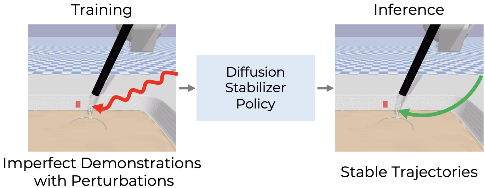
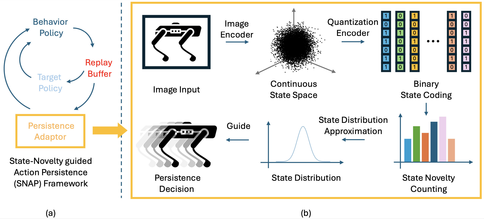
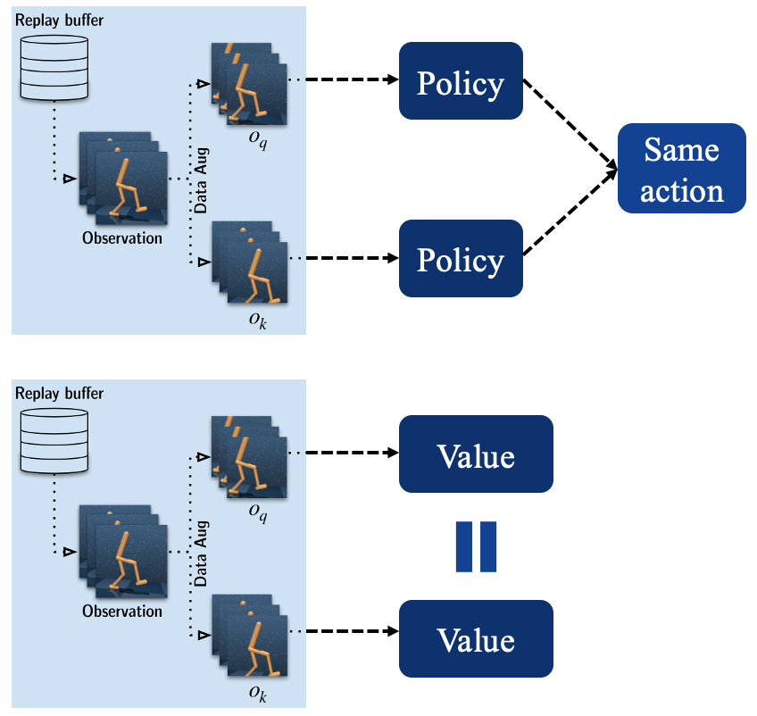
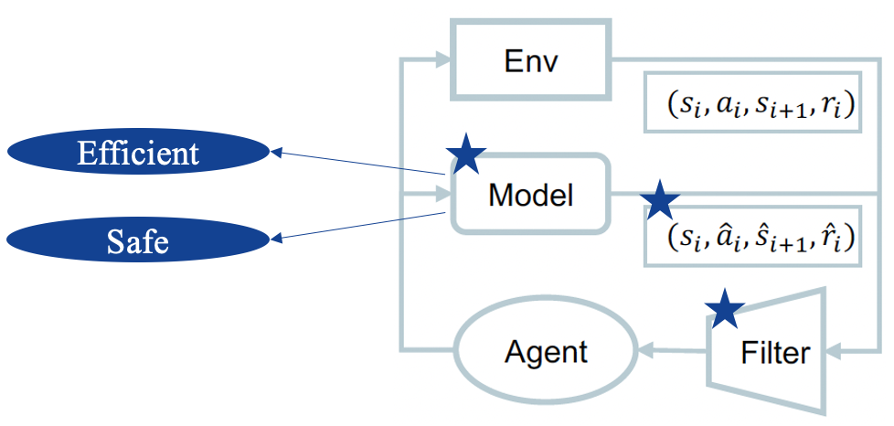
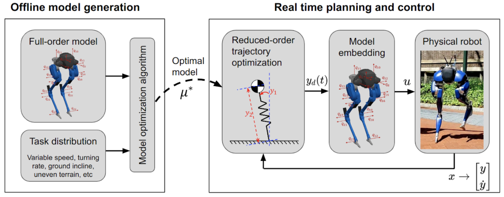

Research
I'm interested in reinforcement learning and robot manipulation. My current research focuses on
improving sample-efficiency and generalization ability of robot learning algorithms by
exploiting data augmentation, leveraging pre-trained models,
learning a dynamics model/world model.
Some papers are highlighted.
|
|

|
Diffusion Stabilizer Policy for Automated Surgical Robot Manipulations
Chonlam Ho*
Jianshu Hu*,
Hesheng Wang,
Qi Dou,
Yutong Ban,
Under Review
arXiv
Aiming to extend the successes in solving manipulation tasks to the domain of surgical robotics, we propose a diffusion-based policy learning framework, called Diffusion Stabilizer Policy, which enables training with imperfect or even failed trajectories
|
|

|
State-Novelty Guided Action Persistence in Deep Reinforcement Learning
Jianshu Hu,
Paul Weng,
Yutong Ban,
Machine Learning Journal
arXiv
In this paper, we propose a novel method to dynamically adjust the action persistence based on the current exploration status of the state space.
|
|

|
Revisiting Data Augmentation in Deep Reinforcement Learning
Jianshu Hu,
Yunpeng Jiang,
Paul Weng,
ICLR, 2024
arXiv
We make recommendations on how to exploit data augmentation in image-based DRL in a more principled way.
And we include a novel regularization term called tangent prop in RL training.
|
|

|
Solving Complex Manipulation Tasks with Model-Assisted Model-Free Reinforcement Learning
Jianshu Hu,
Paul Weng,
CoRL, 2022
paper link
A novel deep reinforcement learning approach for improving the sample efficiency of a model-free actor-critic method
by using a learned model to encourage exploration.
|
|

|
Beyond Inverted Pendulums: Task-Optimal Simple Models of Legged Locomotion
Yu-Ming Chen,
Jianshu Hu,
Michael Posa,,
T-RO
arXiv
We propose a model optimization algorithm that automatically synthesizes reduced-order models.
|
|
Reviewer, ICLR 2025
Reviewer, TNNLS
|
|
{kind=link}